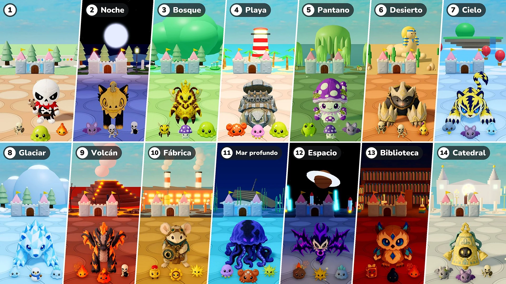

Temporada 2 · Actualización 07 · 10 de noviembre

Defensa del castillo
- Etapas: Ahora cada 10 rondas forman una etapa. La Etapa 1 es el pueblo de siempre; desde la Etapa 2, cada etapa es un lugar distinto, con su propia luz y clima, su suelo y su decoración, y sus propios monstruos, élites y jefes. Tras el último lugar, los lugares vuelven a empezar desde el de la Etapa 2.
- Jefes: Cambia de un jefe más cada 10 rondas a un solo jefe, acompañado de tantas élites como jefes de más había (1 en las rondas 15 y 20, 2 en las rondas 25 y 30…). Desde la Etapa 2, los jefes y las élites son los peluches de ese lugar. Mielreina ahora también puede ser jefe.
- Élites: Las élites ahora son 1,15 veces más grandes. Desde la Etapa 2, su vida aumenta un 50% por etapa, y las estrellas que sueltan cambian de 10 a 10 × el número de etapa (20 en la Etapa 2, 30 en la Etapa 3…).
- Nuevos monstruos: Se añaden 16 monstruos nuevos a los lugares (Murciélago · Cangrejo · Medusa · Rana venenosa · Escorpión · Nube de tormenta · Espíritu de escarcha · Muñeco de nieve · Slime de hielo · Slime de lava · Soldado de cuerda · Engranaje · Meteorito · Libro de hechizos · Gota de tinta · Gárgola). Las pestañas Monstruos y Jefes de la Enciclopedia ahora se dividen por etapa.
- Mejora de atributos: En las rondas en las que se eligen peluches ya no se ofrece la Mejora de atributos.
- Invocaciones: Se corrigió que las Mejoras de atributos no se aplicaran a las invocaciones. Ahora se aplican a las abejas de Mielreina, al árbol de Brotipío y al Gemelo del espejo igual que a los peluches, y una Mejora de atributos elegida mientras una invocación está en juego se le aplica al instante.
- Velocidad ×2: Se añade un botón «×2» junto al botón de pausa. Al pulsarlo, la batalla va al doble de velocidad; al pulsarlo otra vez, vuelve a la velocidad normal. El tiempo para elegir y el paso de tu avatar no cambian. En Jugar juntos, cambia toda la partida lo pulse quien lo pulse.
- Vida del castillo: La barra de vida del castillo es más grande y sus números aparecen justo al lado de la barra.
Etapas y lugares
Los lugares desde la Etapa 2, con sus monstruos y jefes. Los peluches que aparecen como Jefe o Gran jefe de un lugar también aparecen como sus élites.
- Etapa 2 · Noche: Murciélago · Arquero esqueleto · Esqueleto bombardero — Jefe: Blissfox · Algodoncito — Gran jefe: Dreadfox · Pumpcat
- Etapa 3 · Bosque: Abeja obrera · Seta venenosa · Slime — Jefe: Piñerizo · Mielmelada — Gran jefe: Mielreina — Élites: Brotipío
- Etapa 4 · Playa: Cangrejo · Medusa · Slime — Jefe: Cocoblin · Rocatuga — Gran jefe: Rocoblin · Hierrotuga
- Etapa 5 · Pantano: Rana venenosa · Seta venenosa · Murciélago — Jefe: Mudpug · Venenacol — Gran jefe: Boghorn · Esporito
- Etapa 6 · Desierto: Guerrero esqueleto · Arquero esqueleto · Escorpión — Jefe: Bonis · Blandipata — Gran jefe: Bonix · Duripata
- Etapa 7 · Cielo: Nube de tormenta · Murciélago · Espíritu de escarcha — Jefe: Voltis · Auromarta — Gran jefe: Voltiger · Griffion
- Etapa 8 · Glaciar: Espíritu de escarcha · Muñeco de nieve · Slime de hielo — Jefe: Glassy · Shardfin — Gran jefe: Polarrock · Prismlance
- Etapa 9 · Volcán: Brasa · Slime de lava · Esqueleto bombardero — Jefe: Flamo · Ashgon — Gran jefe: Flammonyx · Embergon
- Etapa 10 · Fábrica: Soldado de cuerda · Engranaje · Chispa — Jefe: Mouseball · Engranaje Tictac — Gran jefe: Optimouse · Obscor
- Etapa 11 · Mar profundo: Medusa · Cangrejo · Chispa — Jefe: Hydris · Frico — Gran jefe: Serenis · Abyzel
- Etapa 12 · Espacio: Meteorito · Chispa · Slime de hielo — Jefe: Voidren · Echowing — Gran jefe: Voidling · Noisewing
- Etapa 13 · Biblioteca: Libro de hechizos · Gota de tinta · Brasa — Jefe: Melty · Briarowl — Gran jefe: Candric · Crystowl
- Etapa 14 · Catedral: Gárgola · Murciélago · Guerrero esqueleto — Jefe: Lilupi · Campanito — Gran jefe: Radiant · Campanón